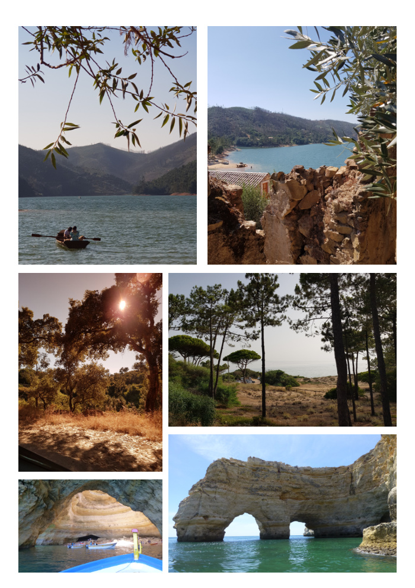

Voyage & Paysage
Série de photographies de voyage capturées au Portugal : lacs et paysages de l'intérieur, côtes rocheuses de l'Algarve, grottes marines, et luminosité méditerranéenne. Un carnet visuel entre nature sauvage et architecture ancestrale.
Matériel : Canon EOS 750D, iPhone
Sélection de photos